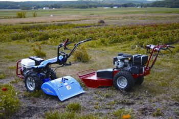

Most homesteads need a sturdy mower, a garden tiller and maybe a way to clear snow from driveways. But buying and maintaining three or more engines can get pretty expensive. Many of us dream of owning a standard tractor with various attachments, but tractors, too, may be out of reach unless you farm for a living.
There’s a third option that may be the perfect, more affordable choice for many of us - a two wheeled, walk-behind tractor. These machines have bigger engines than most single-function power equipment, and they can accept a wide range of attachments, allowing you to buy and maintain just one high-quality engine to perform a variety of tasks. We tried out two leading walk-behind tractors: the DR Field and Brush Mower, sold by Country Home Products of Vermont, and the BCS Walk-Behind Tractor, made in Italy but with dealers throughout the United States. Prices start at less than $3,000 - far less than a riding tractor, and less than several separate machines.
As co-owner of the Wild Onion Farm, a small market-garden enterprise in Lawrence, Kan., I needed something that could easily switch from tilling our flower beds, to mowing the grass rows between them, to clearing brush from the sides of our pond dams. With the help of my wife and business partner, Lynn, I was able to compare the DR and BCS models. For quick facts, view Walk-Behind Tractors at a Glance.
Both brands are great products that any landowner could use with pleasure. Both are well-built and intelligently designed. Neither is inexpensive, but when I talked with friends who have owned them for many years, I became convinced that their longevity makes them a far better value than multiple pieces of less-expensive equipment that do the same work.
We tested the DR Field and Brush Mower 15 horsepower Pro, the second-largest of four available DR models. It comes with a Kawasaki V-Twin Pro overhead valve gas engine that leaped to life at the touch of the electric starter. The engine was powerful enough to take me for a ride on corners until I learned its nuances. According to our 17-year-old son, who does most of the mowing on our farm, “This is not a mower for the meek.” The 26-inch-wide brush mower never faltered through cattails and rough, overgrown areas with small woody shrubs. With its sturdy, heavy duty blades, it mowed cleaner than I expected and cut through everything without bogging down.
We also tested the 42-inch finish mower attachment. This mower has two swiveling caster wheels in front that allow for tight turns. The whole device is built low and can mow under bushes or fences higher than 17 inches from the ground. It really ate up the acres. DR estimates it can mow a half-acre lawn in just under 30 minutes. Farms aren’t lawns, though. Our “lawn” hides a perilous collection of limestone rocks, sawed-off fence posts and potholes caused by who knows what. The DR’s wide rear tires and large caster wheels kept the mower deck above the fray, preventing bent or dented blades. This attachment also features two high-lift mulching blades that do a superior job of lifting the vegetation prior to cutting and mulching.
If you need a backup electricity source, a 6,000-watt generator attachment is also available, which DR says will simultaneously power a refrigerator, freezer, well pump and home heating system. This unique generator attachment gives you four 110-volt ground-fault outlets with 20-amp breakers, and one 220-volt outlet with a 25-amp circuit breaker. (For use in temperatures lower than 35 degrees, they also offer a winter engine cover.)
Other attachments available include a 30-inch snow thrower and a 42-inch snow blade. All mount and dismount effortlessly. A sturdy stainless steel shaft on the front of the tractor slides easily into the mounting rings on each of the devices, held in place by a stainless steel ring and pin. The DR uses belt drives for all the various tools, and it is a simple matter to put them on, though each device uses a different length belt.
The tractor itself features a lockable differential (a gearbox that sends power from the engine to the rear wheels; when it’s locked, they turn at the same rate) that is most useful when mowing across slopes. According to DR, this machine is safe on slopes up to 20 degrees. When you’re mowing on level terrain, the differential can remain unlocked, allowing for easy turning and handling.
The DR uses the same tires one finds on all-terrain vehicles, with very aggressive tread and liquid sealant to prevent punctures. It sits low and wide for a ground-hugging center of gravity.
The 15 horsepower V-Twin Pro has four forward gears and one reverse. On the left handle is a deadman, a safety feature that cuts off the engine if the operator loses control. It must be depressed for the engine to operate when the mower is engaged. That same handle also carries the clutch, which must be squeezed while running. (This was the source of the single complaint we had - squeezing it nonstop over long periods tended to cause hand fatigue for Lynn.) A control on the right handle actuates a powerful disk brake.
Joy Lominska, a market gardener near Lawrence, Kan., and her husband, Bob, used an earlier DR model for years. They used it to mow pasture and had many, many hours on it when it was retired. They now have a new model, and Joy appreciates its ability to mow through heavy, wet fescue, small stumps and saplings. She says she is a little intimidated by the newer, more powerful model, especially when maneuvering in tight areas - around her herbs, for example. Bob says he does not have the same problem, which mirrors Lynn and I’s experience with the DR.
Overall, the DR is a straightforward machine, easy to understand and operate. It is quite powerful, which translates to a quick run through most chores, without fear of bogging down.
We tested the BCS model 853 tractor with the rear-mounted 26-inch tiller and brush cutter attachments. It is powered by a 13 horsepower Honda GH390 single-cylinder gas engine. The BCS and its implements differ from the DR in that they are gear-driven, with no belts. This means there is a power takeoff (PTO) shaft between the transmission and the implement. This model came with a quick coupler that allowed us to switch implements in about a minute.
The handles of the BCS are reversible - the back of the machine can become the front of the machine. This allows you to mount a rear tine tiller or, reversing the handle configuration, a variety of mowers, snow blowers and even a chipper/shredder. The handlebars can be rotated to the side at several heights, allowing you to walk alongside and steer with one hand to avoid disturbing tilled soil.
The tiller, for which BCS is known, worked exceedingly well. I tried it on sod and an established garden plot. Two passes on the sod turned it into a fine seed bed. One pass was all that was necessary on the garden plot, and the tiller can work to a depth of 8 inches. The secret of the BCS’ tilling ability is its fast tine speed, approximately twice that of some comparable tillers. Also, the tiller does not leave an untilled center strip, as other makes do. There is an adjustable hiller/furrower that increases the tiller’s usefulness for cultivating.
The brush mower attachment is a flail mower, meaning it has many individual blades that spin vertically from a horizontal axis. These are often considered to be the better choice for rough terrain because the blades are able to pivot, making them less likely to be destroyed by tree stumps, rocks or other immovable objects. The company also sells a sickle bar mower, up to 53 inches in width, which it recommends for use on small saplings (up to 1.5 inches) and on pond dams. Both the brush mower and sickle bar mower pivot on the tractor to conform to uneven terrain.
There’s also an optional 38-inch-wide finish mower that can be outfitted with a grass collector. Combined with a sulky (a two-wheeled, pull-behind seat), you can have the configuration of a riding lawn mower, though of much greater length.
Many more implements are available for the BCS tractor, some made by BCS and some by other manufacturers. Earth Tools, the biggest BCS distributor in the United States, carries more than 30 implements, including chipper/shredders, snow throwers, plastic mulch layers, bedshapers, wood splitters and even minibalers for hay.
The tractor has four forward speeds, but the top speed is designed for use with the optional sulky. I wasn’t aware of that when I first tried it out, and I’m proud to say I can run as fast as the tiller. The tractor also can be reversed for maneuvering, and doing so disengages the implement.
The tires on the BCS resemble tractor tires, deeply lugged and 5 inches wide. You can purchase axle extensions that increase the width of the tractor for mowing across steep slopes.
I spoke with Virg Funk of Topeka, Kan., who’s owned BCS tillers for 16 years. He uses the tiller, snow blower and a chipper/shredder. Virg also has a moldboard plow, the use of which requires 90 pounds of wheel weights. Funk says the electric starter is a big plus, especially on cold mornings when he uses the snowblower. His one concern is that the control cables, which must bend back and forth as the handles are reversed, can stretch over time. But parts, service and distribution are excellent now, he says, and he can always get what he needs.
As with the DR, the BCS is ready to attack difficult tasks. This means it requires a considerable amount of upper-body strength. Users who don’t possess this strength may run into difficulties when busting sod or attempting to till exceptionally dry soil.
The BCS is powerful and can easily accomplish some highly specialized jobs. Its wide range of implements allows it to handle many duties on small farms or acreages. I would gladly host a BCS tractor on our farm.
Choosing between the DR and the BCS is a matter of what jobs you want the equipment to perform. If you’re a small farmer or serious gardener, I would recommend the BCS for the many implements available for it. If you need a piece of equipment to keep your land and lanes in top shape, or want to add an emergency generator attachment, you’ll probably prefer the DR.
I had been hoping to find a more sustainable solution to my land caretaking chores - a multifaceted tool, with one really great engine. This dream machine would always start, have plenty of power and last a long time. I found two this summer in the DR and BCS.
|
 SCOTT HOLLIS The DR Field and Brush Mower and the NCS Walk-Behind Tractor can help you tackle tough tasks with ease. |
SCOTT HOLLIS Author Dan Nagengast says the DR Field and Brush Mower easily removes thick overgrowth and cattails. |
DR POWER EQUIPMENT This 6,000 watt generator attachment from DR can provide power in a pinch. |
|
DR POWER EQUIPMENT Got snow? If so, the DR 30-inch snow thrower attachment is for you. |
SCOTT HOLLIS This 26-inch tiller is just one of many available attachments that increase the BCS’ functionality. |
|